codly.annotation-ref
A native reference element created for a labelled annotation in a code block inside a figure.
Signature
// Create a new annotation reference.
codly.annotation-ref(body, block: label, line: int, item: content, by: "line" | "item", suffix: none, separator: auto, numbering: auto)
// Equivalent set-rule for an annotation reference.
codly.annotation-ref-set_(..args)
// Override the show-rule for an annotation reference.
codly.annotation-ref-show_(it, ..args)Codly creates this element when Typst resolves a native reference such as @note. Use annotation-ref-set_(...) to set fields in scope, or annotation-ref-show_(callback) to replace or transform its display. The show wrapper accepts a callback or content, as supported by the element show-rule API.
Fields
| Field | Type | Default | Meaning |
|---|---|---|---|
body |
content or none |
required | Internal body of the native reference. |
block |
label |
required | Label of the containing code block. |
line |
int |
required | Displayed source line associated with the annotation. |
item |
content |
required | Annotation content used for item references. |
suffix |
content or none |
none |
Optional suffix after the formatted line number. |
by |
"line" | "item" |
required | Whether the suffix shows a formatted line number or the annotation item. |
separator |
auto | str | content | none |
auto |
Content between the native block reference and its suffix; auto uses codly.ref settings. |
numbering |
auto | function | none |
auto |
Line-number formatter; auto uses codly.ref settings and none omits the suffix in line mode. |
by, separator, and numbering can also be set for all generated references with codly.ref. Explicit fields on this element take precedence. In item mode, the annotation’s content is used; numbering and suffix apply only to line mode. With line mode and numbering: none, the rendered reference contains just the native reference to the code block.
annotation-ref-show_ receives the generated reference element, so a callback can inspect or wrap it. For example, #show: codly.annotation-ref-show_(it => [Note: #it]) prefixes each displayed annotation reference while keeping its existing rendering.
Example: Basic usage
The item-mode reference uses the annotation content after the code figure reference:
#import "@preview/codly:2.0.0" as codly
#figure(caption: [A code example])[
#codly.new(
```
first line
second line
```,
annotations: ((start: 2, label: <note>, content: [the note]),),
)
]<example>
The annotation reference is @note.Edit & run on your device
The highlighted source and output update after you stop typing. Copy code includes your edits.

Example: Item-based reference
The item-mode reference uses the annotation content after the code figure reference:
#import "@preview/codly:2.0.0" as codly
#show: codly.ref-set_(by: "item", sep: " — ")
#show: codly.annotation-ref-show_(it => [Note: #it])
#figure(caption: [A code example])[
#codly.new(
```
first line
second line
```,
annotations: ((start: 2, label: <note>, content: [the note]),),
)
]<example>
The annotation reference is @note.Edit & run on your device
The highlighted source and output update after you stop typing. Copy code includes your edits.
